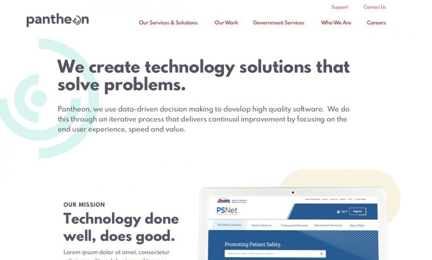

Overview
Pantheon creates technology solutions that solve problems. After assessing their current processes, values, and expertise, they realized their branding and website did not accurately reflect who they were.
This UX project included the following services performed:
- Agile-based Technical Project Management
- User Research via Interviews and Surveys
- Logo and Brand Redesign
- Information Architecture
- UX and Visual Design
- Drupal Development
- Content Writing
- Brand Assets Creation
Research Phase
Since this was a complete rebrand of Pantheon, we wanted to make sure that we had a firm understanding of Pantheon’s new identity. We conducted research to understand how our target audiences perceived them - what they valued about Pantheon as a company, and what made them unique in their eyes.
We met with company leadership to understand the rebranded vision, performed market analysis, ran surveys with internal staff, and conducted interviews with potential employees, partners, and clients.
The data we collected led to designs and branding decisions that communicate Pantheon's values and strengths: “Mission-Driven”, “Empathetic”, “Transparent,” and “Authentic.” Specific research on the website highlighted which features were most important to their website audiences, and that research was used to make decisions about site feature prioritization.
Brand Strategy: Voice, Logo, Brand Identity
We wanted to make sure the voice and tone of the content writing and visual design accurately reflected Pantheon's values and mission. A voice guide was developed which now informs their communications. We designed and iterated on dozens of logo variations that conveyed the values discovered during the research phase. We researched color theory to understand the feelings and emotions our color palettes options conveyed to find the one that matches Pantheon's company values.
Style tiles were created to show the various approaches the brand could take. These tiles contained multiple options on how we could approach icon styles, color palettes, and font types. We again used a data-driven process by surveying team members and partners to get their feedback and thoughts.
We re-designed and created PowerPoint decks, proposal templates, usability reports, and a brand guide, among other assets. The sprint process gave us flexibility to prioritize the most important work first and ensure workload balancing across team members so that it could be completed alongside other project work.
Design Phase
With stakeholder goals, a voice and tone guide, user research data, and competitor data in hand, we embarked on the website design process. This process included not only the wireframing and UI design of the new website, but also ensuring that the site reflected Pantheon’s new identity. We used our research to create a site architecture that matched the goals and the expectations of their audience. We started with wireframing, and then moved onto UI Design.
Wireframes

Mockups
Once the UI Design was finalized, we were able to put together final mockups, a UI Kit and tackle the brand assets.


Conclusion
The Pantheon website re-design was built using a Drupal-based Content Management System to allow for future updates as we continue to iterate the brand. We have received positive feedback so far, but will continue to use data to make decisions and updates to our design and content in the future. We rolled out what we considered a minimum viable product (MVP), and have plans to grow it over time - making iterative improvements to the site, treating it with a product mindset.